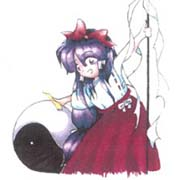
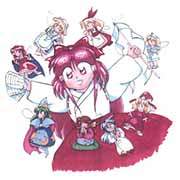
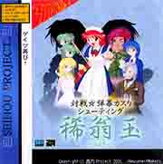
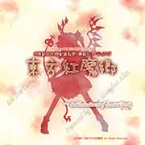
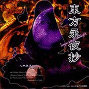
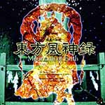
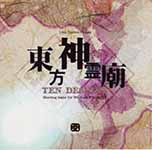
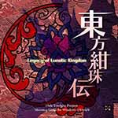

非商业性质的创作
-
同人漫画
对于原作角色二次设定的贡献，丰富人物性格
对于原作角色二次设定的贡献
丰富人物性格
-
同人音乐
对于原作音乐的新演绎风格，同人灵魂所在
对于原作音乐的新演绎风格
同人灵魂所在
-
考究探索
对于原作以及历史原型，世界观的考据，深挖文化内涵
对于原作以及历史原型
世界观的考据，深挖文化内涵
官方作品发展史
-
1995-1996
东方系列的诞生东方灵异传～Highly Responsive to Prayers
作为东方系列的第一座
在1996年11月先行展示于第20回鸠山祭
运行于PC-98平台，是一款打砖块游戏 -
1997-1998
接续的四作诞生1997.08 东方封魔录～the Story of Eastern Wonderland
1997.12 东方梦时空～Phantasmagoria of Dim.Dream
1998.07 东方幻想乡～Lotus Land Story
1998.11 东方怪绮谈～Mystic Square -
1999-2001
西方系列2000.12 秋霜玉（ComicMarket59）
2001.12 稀翁玉（ComicMarket61） -
2002
第一部以Window平台的新作诞生在CM62前夕社团改名为 上海爱丽丝幻乐团
东方红魔乡～the Embodiment of Scarlet Devil.
在CM62上推出，20世纪延长型完全2D射击游戏（STG）
因为新作和旧作的设定之间矛盾众多
作者同时也表态了这个意思
意味着的PC-98平台的旧五作的设定不再延续 -
2002-2004
发展初期2002.08 官方音乐CD 蓬莱人形～Dolls in Pseudo Paradise
2003.08 正作 东方妖妖梦～Perfect Cherry Blossom
2003.12 莲台野夜行～Ghostly Field Club
2004.01 官方漫画 東方香霖堂～Curiosities of Lotus Asia
2004.08 正作东方永夜抄～Imperishable Night.
2004.12 第一部格斗作正作「东方萃梦想～Immaterial and Missing Power.」
2004.12 官方音乐CD 「梦违科学世纪～Changeability of Strange Dream」 -
2005-2007
东方世界观开始形成2005.08 正作 东方花映塚～Phantasmagoria of Flower View
2005.12 小数点作 东方文花帖～Shoot the Bullet
2006.12 设定资料集 东方求闻史纪～Perfect Memento in Strict Sense
2007.08 正作 东方风神录～Mountain of Faith -
2008-2012
东方世界观的成熟2008.05 格斗正作 东方绯想天～Scarlet Weather Rhapsody
2008.08 正作 东方地灵殿～Subterranean Animism
2009.08 正作 东方星莲船～Undefined Fantastic Object
2009.08 格斗正作 东方非想天则～追寻特大型人偶之谜
2010.03 小数点作 Double Spoiler～东方文花帖
2010.08 小数点作 妖精大战争～东方三月精
2011.08 正作 东方神灵庙～Ten Desires
2012.04 设定资料集 东方求闻口授～Symposium of Post-mysticism -
2013-现在
东方世界观进一步的扩张2013.05 格斗正作 东方心绮楼～Hopeless Masquerade
2013.08 正作 东方辉针城～Double Dealing Character
2014.05 小数点作 弹幕天邪鬼～Impossible Spell Card
2015.05 格斗正作 东方深秘录～Urban Legend in Limbo
2015.08 正作 东方绀珠传～Legacy of Lunatic Kingdom
2016.12 PS4版 东方深秘录～Urban Legend in Limbo
寻找志同道合的小伙伴一同创作